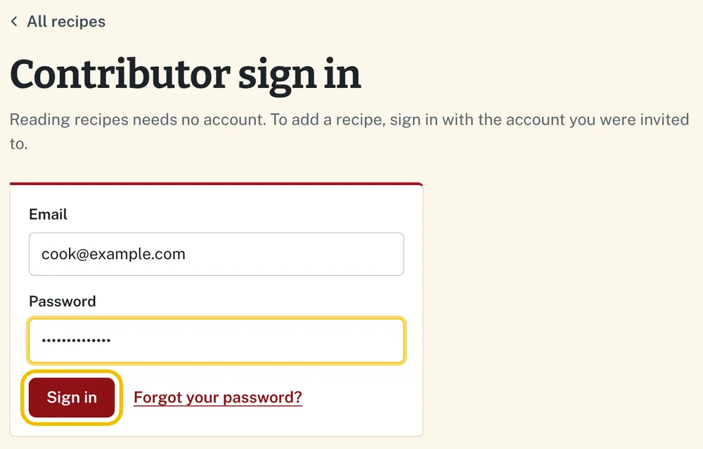
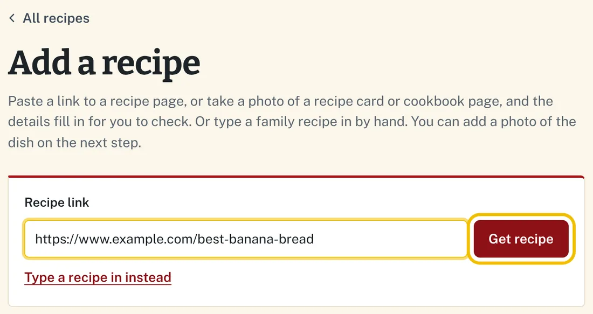
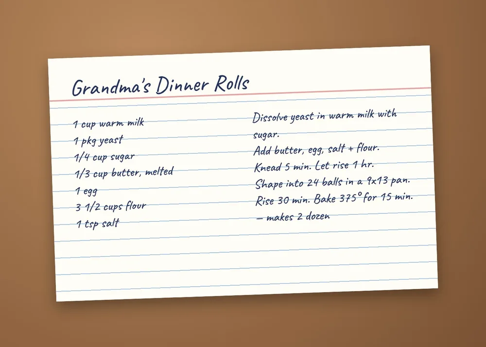
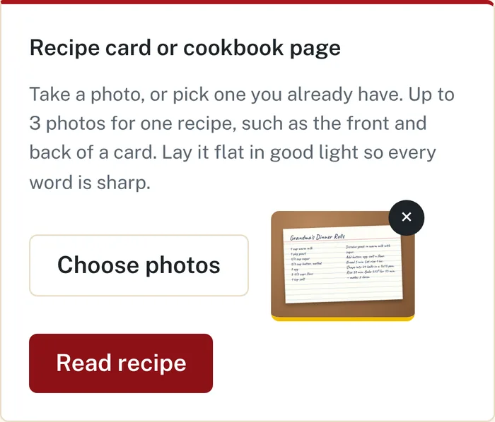
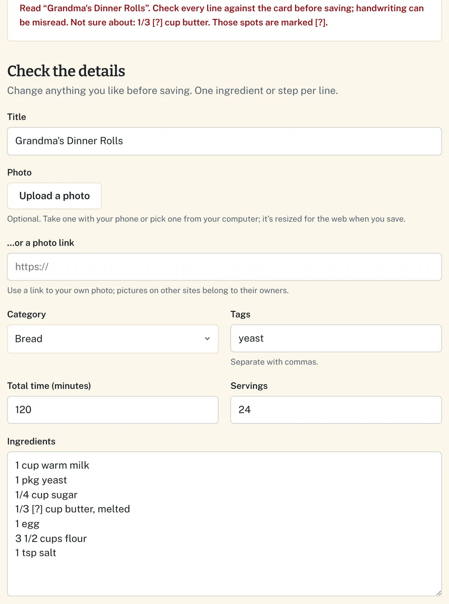
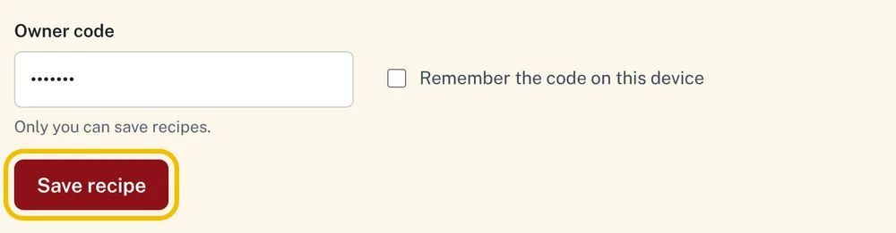
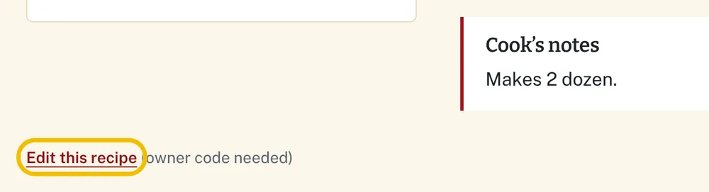
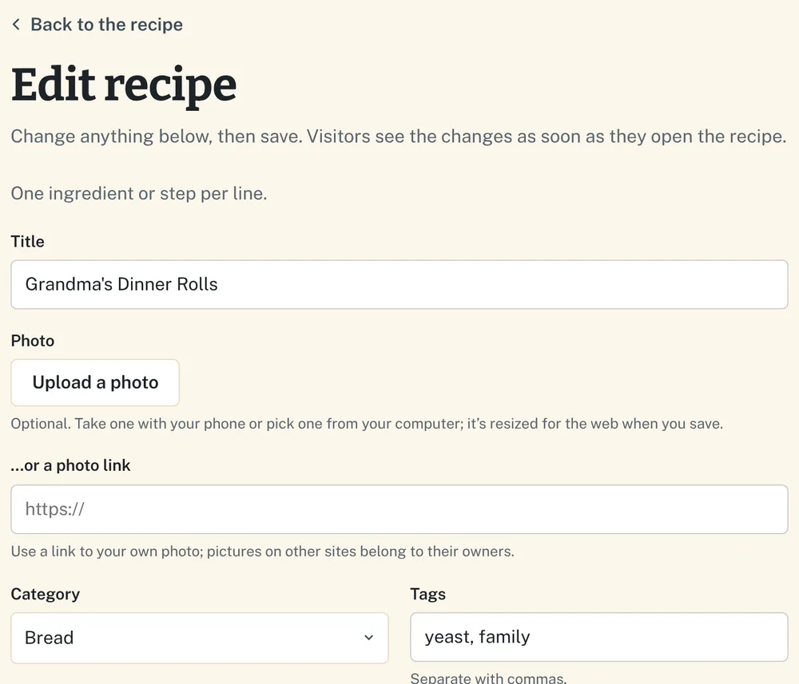
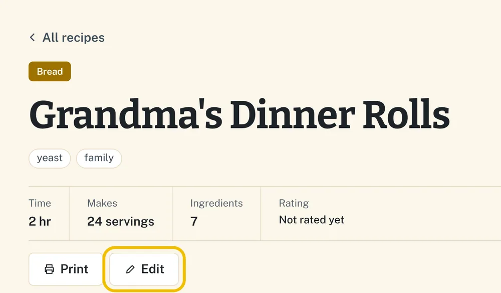
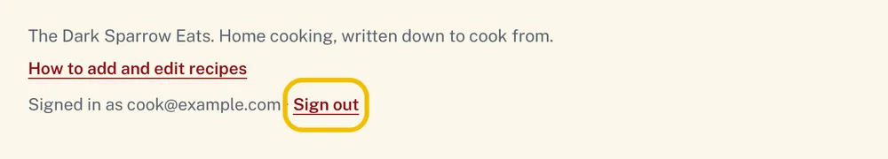

Contributor guide
How to add and edit recipes
Thanks for helping fill the recipe box! You can add recipes and fix them later, right from this website, on a phone or a computer. Reading recipes needs no account; adding and editing need one, and Art sets yours up.
Set up your account and sign in
- Open the invitation email from The Dark Sparrow Eats and click its link. (Check your spam folder if it isn’t in your inbox. The link works once and expires after a day or so; if it’s too late, ask Art to send another.)
- The site opens and says Welcome. Choose a password of at least 8 characters, type it twice, and click Save password. You’re now signed in.
- Next time, click Add a recipe or Edit this recipe and the site asks you to sign in with your email and password. Each phone or computer remembers you until you sign out.

Forgot your password? On the sign-in page, click Forgot your password?, enter your email, and click Email me a reset link. The link in that email lets you choose a new password.
Once you’re signed in, everything starts from the Add a recipe button at the top right of every page. On a phone it just says Add.
Add a recipe from a link
Use this when the recipe is on another website.
- Open the recipe on that website and copy the address from your browser’s address bar. It starts with https://.
- On this site, click Add a recipe, paste the address into Recipe link, and click Get recipe.
- The form below fills in with the title, ingredients, and steps. Check them, and fix anything that came in wrong.
- Click Save recipe.

Some websites don’t allow this. If yours doesn’t, the address goes into the Source box and you type in the rest yourself. Steps copied from another site are that cook’s own words, so it’s good to rewrite them in yours. The original site is credited on the recipe page either way.
Add a recipe from a photo
Use this for a recipe card, a handwritten note, or a page in a cookbook. The site reads the writing and fills in the form for you.
- Lay the card or page flat in good light, and hold the camera straight over it so every word is sharp.
- On Add a recipe, under Recipe card or cookbook page, click Choose photos. On a phone you can take the picture right there, or pick one you already have. Up to 3 photos make one recipe, such as the front and back of a card.
- Click Read recipe. Reading takes up to a minute.
- The form fills in. Check every line against the card, because handwriting can be misread. Anything the reader wasn’t sure of is marked [?], so look for those first.
- Click Save recipe.



Good to know. This reads the recipe text only; the card photo isn’t saved. To show a picture of the finished dish, add it with Upload a photo in the form. There’s a limit of 50 photo reads a day for everyone combined, so please read each recipe once.
Type a recipe in by hand
- On Add a recipe, click Type a recipe in instead under the link box.
- Fill in the form:
- Title, the only required field.
- Photo of the finished dish (optional). Click Upload a photo to take or pick one; it’s resized for you.
- Category: pick one from the list. Every recipe needs one. If none fits, ask Art to add a category.
- Tags: a few words separated by commas, like beef, slow cooker.
- Total time in minutes, and Servings as a number or range, like 4 or 6-8.
- Ingredients: one per line, with the amount, like 2 cups flour.
- Method: one step per line. Leave out the step numbers; the site adds them.
- Cook’s notes: who the recipe came from, serving ideas, or tips.
- Click Save recipe. The recipe opens so you can see how it looks.

Edit a recipe
You can fix any recipe on the site, including ones you didn’t add.
- Open the recipe and scroll to the bottom of the page.
- Click Edit this recipe. The form opens already filled in.
- Change what you need. To replace the dish photo, click Upload a photo; to take it away, click Remove photo.
- Click Save changes. Click Cancel to leave without changing anything.
Please change only recipes you know. Fix typos and add tips freely, but check with Art before rewriting someone else’s family recipe.


A shortcut while you’re signed in. An Edit button appears next to Print at the top of every recipe.

Plan the week and make a shopping list
Anyone can use these. If you’re signed in, your plan and list are saved to your account, so you can plan on your computer and shop with your phone: open the shopping list on your phone at the store and tick things off there. If you’re not signed in, they’re saved only on the phone or computer you use.
- On any recipe, click Add to meal plan, choose breakfast, lunch or dinner and a day, and click Add. Or click Meal plan at the top of the site and choose recipes for each day’s breakfast, lunch and dinner. Plan as many or as few as you like, or write a note, like “Leftovers.”
- On the meal plan, click Shopping list. Every ingredient for the week’s planned meals is listed once, with each recipe’s amount, so “Onion” shows “1 medium · Chili” and “1 large · Potato Soup.”
- Tick anything you already have and it moves to Already have. Add extras like paper towels at the bottom.
- Click Print for a paper list, or Copy list to paste it into a text or note. Both leave out what you already have.
Signing out
You stay signed in on each phone or computer until you sign out. To sign out, for example on a shared computer, scroll to the bottom of any page and click Sign out.

If something goes wrong
Nothing is saved until you click Save, so you can always start over. Messages appear in red just under the button you clicked.
| If you see… | Do this |
|---|---|
| That email or password isn’t right | Check both, including capital letters. Still stuck? Use Forgot your password? on the sign-in page. |
| That link has expired or was already used | Invitation and reset links work once. Sign in, use Forgot your password?, or ask Art to send a new invitation. |
| Your sign-in has ended | Sign in again, then click Save again. |
| That photo doesn’t look like a recipe | Take a closer, sharper photo in better light, then try again. |
| That’s today’s limit of photo reads | Try again tomorrow, or type the recipe in by hand. |
| Anything else | Wait a minute and try again. If it keeps happening, send Art a screenshot of the message. |